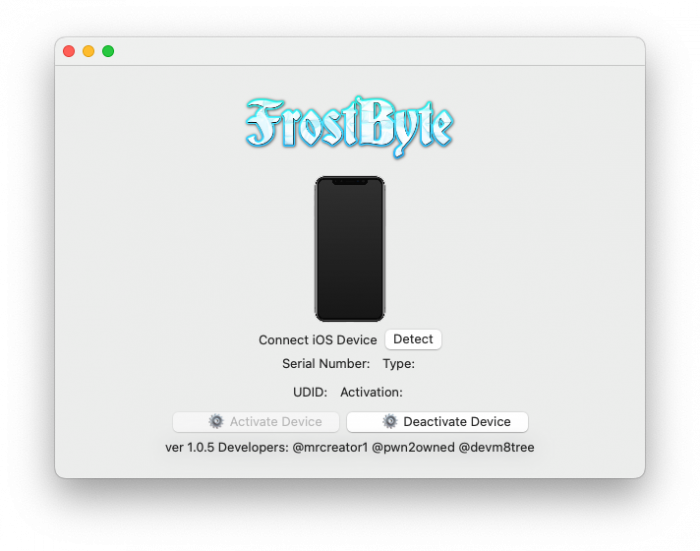
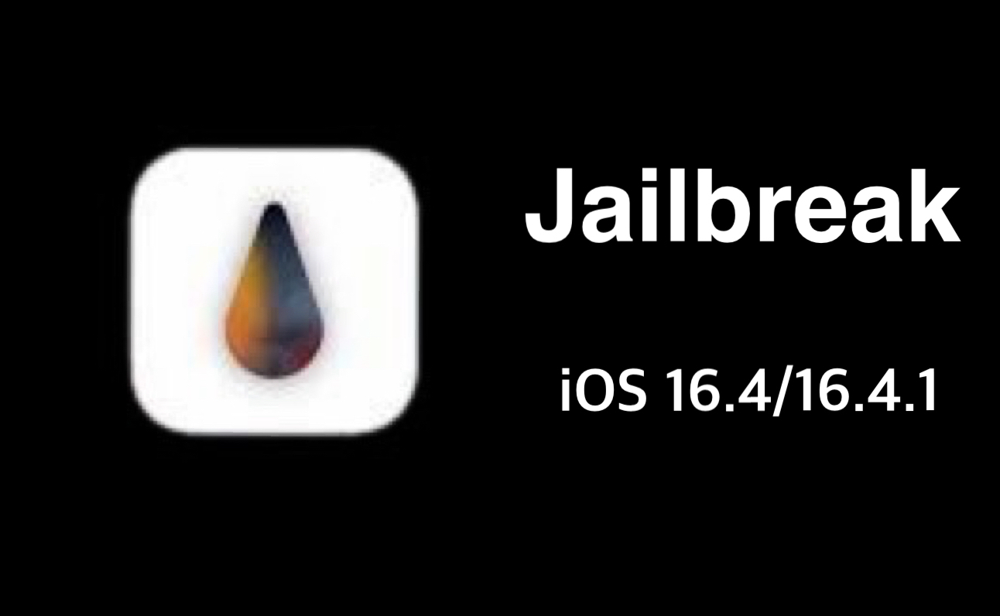
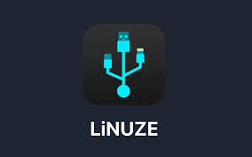
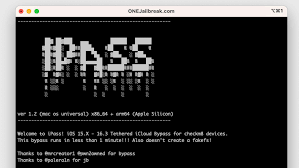
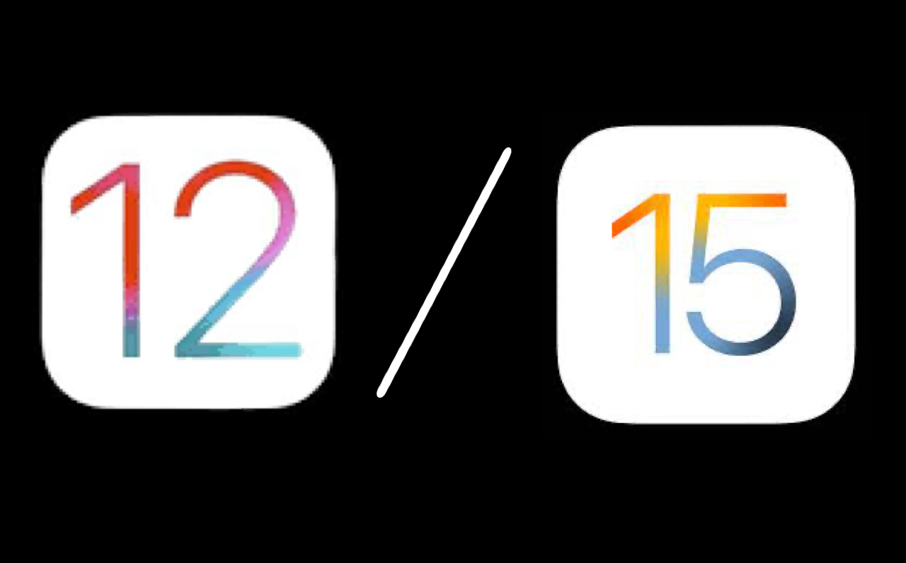

Twitter user @MrCreator1 creates new iCloud bypass tool for iOS 13.0 - 16.5.1!!
This tool is fully functional on iOS 15 and 16, but at this point Mr. Creator is still developing the iOS 13 and 14 parts.
I'm pretty sure that the iOS 13/14 parts will be up and running in no time though.
The software costs $5 to register your your device, and you can follow the steps on his website Here.
Photo I took myself so no credit this time :)
iOS 17 contains so many new cool features such as Live Voicemail, Leave a message in FaceTime,
StandBy for when your device is on it's side, Interactive Widgets, Swap Numbers with NameDrop, New Journal app and SO much more!
iOS 17 is Currently in beta, but the full release should come out in September.
Photo credit to TechCrunch.
If you like, you can read more on Apple's website Here.
Twitter user @MrCreator1 creates new UNTETHERED iCloud bypass tool for iOS 15.0 - 16.5!!
This tool is able to bypass Apple's new server-side patch when preforming it's unlock process.
PLEASE NOTE: Mr. Creator is now considering FrostByte extinct, so it does not function anymore.
There will not be a final version, and even if you find a copy on the internet,
the software can no longer generate the activation files for your device because he has removed the server.
If you would like to, you can check out Mr. Creator's new tool ByteBurst.
It runs exactly the same as FrostByte, but it is a paid software. The registration costs $5 per device.
Photo credit to ONEJailbreak.
If you like, you can still read the full article Here.
Palera1n developers have updated the Palera1n jailbreak to support iOS 16.4/16.4.1
Download link can be found in my Downloads page.
Photo credit to iDownloadBlog.
If you like, you can read the full article Here.
Allows users to enter PwnDFU mode using an iPhone instead of a computer!
Easy to use! Just add This repo to Cydia or Sileo on your jailbroken device.
Make sure you have a USB OTG Lightning to USB-A plugged into your iPhone, and simply connect the two phones together with a normal Apple USB charging cord.
NOTES TO KEEP IN MIND: Make sure you are using the Apple cord with the USB-A end and not the new one with the USB-C end,
Also make sure that you are using a checkm8-compatible device which are the iPhone 5s to iPhone X.
This method will also work fine with iPads and iPod Touches with the A7 to A11 processor.
Just make sure you are in DFU mode before pressing the button in LiNUZE!
Photo credit to InfoiDevice
If you like, you can read the article Here. Remember to click the "Read more" button to see the full article.
Twitter user @ios_euphoria (now available at @MrCreator1 on Twitter) releases new iCloud bypass tool for iOS 15.0 to 16.3.1!
Download link available in my Downloads page.
Photo credit to ONEjailbreak.
If you like, you can read the full article Here.
Apple releases new updates for the iPhone 5s, 6, 6s, and 7.
Free to download an ipsw.me, link to site available in my Downloads page.
Photo credit to OSXDaily and Apple Wiki.
Supports all checkm8-compatible devices on iOS 15.0 to 16.2!
Download link can be found in my Downloads page.
Photo credit to iDownloadBlog.
Supports all devices on iOS 15.5 to 16.1.2!
Download link can be found Here
Photo credit to Tools 4 Hack.